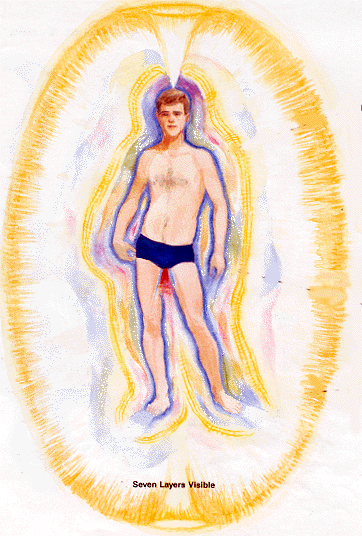
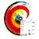
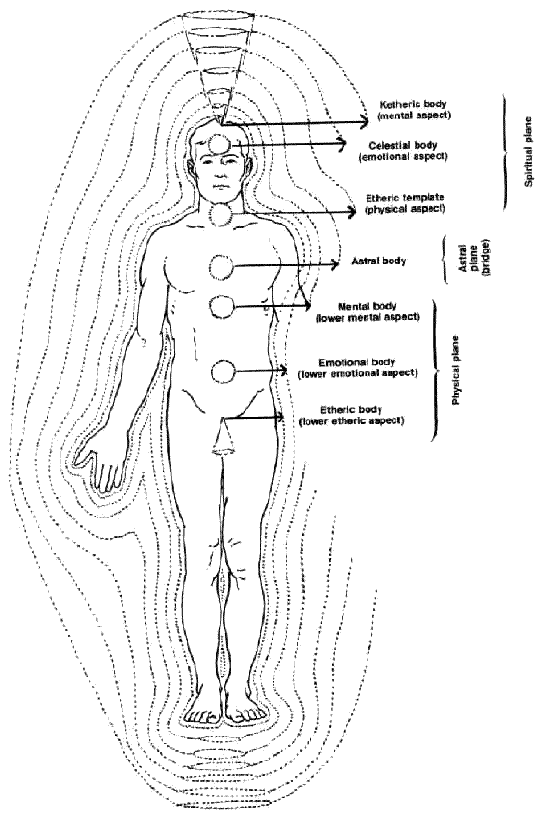

The Three Planes and the Seven Energy Field Bodies
(+Cosmic Body)
A suggested paradigm standard for esotericism
It is proposed here that the following reperesentation of the human auric energy fields (as presented by Barbara Ann Brennan in her book Hands of Light be used as a standard paradigm for the Etheric bodies or resonances for esoteric science. The reason I am using this model and not similiar ones like the five koshas of Vedanta, seven principles of Blavatsky, seven bodies of Adyar Theosophy, seven or nine level self of Steiner, etc, is because Barbara Brennan presents, in my opinion, the most detailed coverage that is free of religious or mytho-symbolic overburden and intellectual rigidity, and at the same time does not confuse the various planes (it is accepted that it is only the formative/etheric body that we are considering here). This is not to say that it is the only option, or even necessarily the best possible one. But it is at least a good starting point. It is hoped that eventually with enough such paradigms and exemplars it might (and I stress might) be possible to construct a universal esoteric science comparable to (and embracing) the methodological science of materialism. Or at least to make a tentative beginning.
Ignoring the physical body on the left (which is included only for the sake of comparison) there are - in this paradigm - seven formative energy field bodies, as follows:

In the linked pages I have also included, as well as quotations from Hands of Light describing each auric body /energy layer, and equivalent correspondences, my own table presenting further associations and correspondences with the physical-mental body; some of which are quite close, others very distant and abstract only. There are several general paradigms, to wit:
 The subtle body / vehicles of consciousness hypothesis, which assumes a distinct body or aura, and the suggestion that these can be matched up with the equivalent body or aura in other esoteric systems of thought)
The subtle body / vehicles of consciousness hypothesis, which assumes a distinct body or aura, and the suggestion that these can be matched up with the equivalent body or aura in other esoteric systems of thought)
The associative means of thinking in terms of correspondences (e.g. astrology, Hermeticism, Taoism, etc), which describes supposed associated qualities or attributes
The Psychological approach, which does not distinguish distinct ontological grades in the way the Subtle Body or aura/kosha approach does, but still has distinct faculties that can in fact be considered equivalent.
 - the Psycho-Spiritual Growth theme, best developed by Ken Wilber, which assumes a spectrum or continuum of development through which the individual passes, and which stages can interestingly be matched with the aura/kosha bodies.
- the Psycho-Spiritual Growth theme, best developed by Ken Wilber, which assumes a spectrum or continuum of development through which the individual passes, and which stages can interestingly be matched with the aura/kosha bodies.

- the cosmological evolutionary interpretation, according to which these subtle body / kosha /aura stages can be seen as embodied in (or even represented by) grades in the evolution of consciousness through increasingly complex material forms (emergent evolution).

The Seven Energy Bodies and Planes Of Consciousness
Barbara Brennan's description of auras and subtle bodies agrees with
the "periodical" theory of planes
of existence. The Etheric Body on the
physical plane, and the Etheric Template
Body on the Spiritual plane are obviously equivalent (as their names
indicate). What she calls the Astral Body
is clearly a higher octave of the Emotional
Body, and a lower of the "Celestial".
And the Mental body would perhaps have a similiar
relationship to the Ketheric template Body
as the Etheric and Etheric Template bodies have to each other.
There are no apparent higher octaves to the gross physical
body, unless one considers the etheric.

Seven bodies and seven chakras
According to various writers such as Alice Bailey and Barbara Brennan
there are also chakras located in
each of the subtle bodies, so that each
body has its full complement of seven (or however many) chakras.
In addition to that, the chakras would have their corresponding equivalences
in that each body corresponds to a chakra, as indicated in the above diagram.


http://www.kheper.net/topics/subtlebody/ethericbodies.html